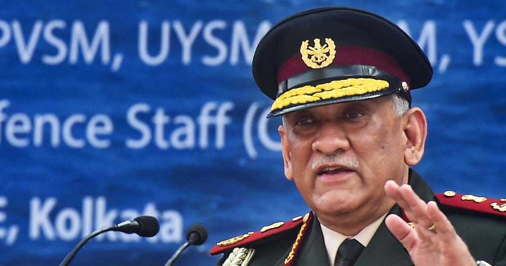

General Bipin Ravat
1st Chief of Indian Defence Staff

Ex. CDS Bipin Ravat Sir
Here's a time line of Sir Bipin Ravat:
- 1958 - Born in Garhwal District, Uttarakhand
- 1964 - Attended Cambrian Hall School in Dehradun and St. Edward's School in Shimla.
- 1975 - Graduated first in the order of merit and was awarded the 'Sword of Honour' from National Defence Academy, Khadakwasla and the Indian Military Academy, Dehradun
- 1978 - Was commissioned as second Lieutenant into the 5th battalion, the 11 Gorkha Rifles (5/11 GR) on 16 December 1978.
- 1980 - Got promoted as Lieutenant in Indian Army.
- 1984 - Became Captain in Indian Army.
- 1985 - Married Madhulika Rawat (née Raje Singh).
- 1989 - Got promoted as Major in Indian Army.
- 1997 - Graduated at Defence Services Staff College (DSSC), Wellington and the Higher Command Course at the United States Army Command and General Staff College (USACGSC) at Fort Leavenworth, Kansas.
- 2007 - Became Brigadier in Indian Army.
- 2011 - Got promoted to Major general position in Indian Army (substantive, seniority from 11 May 2010).
- 2011 - Was awarded a honorary doctorate by Chaudhary Charan Singh University, Meerut for his research on military-media strategic studies
- 2014 - Got apponited as Lieutenant General in Indian Army.
- 2016 - Became 37th Vice Chief of the Army Staff
- 2017 - Got appointed as 26th Cheif of Army Staff (COAS)
- 2019 - Became 57th Chairman of the Chiefs of Staff Committee
- 2019 - Appointed as 1st Chief of Defence Staff in Indian Armed Forces (tri-service)
- 2021 - Deceased at the age of 63 with his wife and 14 members of his staff during Indian Air Force Mil Mi-17 helicopter crash.
- 2022 - Posthumously honoured with the Padma Vibhushan in the 2022 Republic Day honours list.
- During his 43 years of service in Indian Armed Forces, he was awarded for gallantry and distinguished service with the Param Vishisht Seva Medal, Uttam Yudh Seva Medal, Ati Vishisht Seva Medal, Yudh Seva Medal, Sena Medal, Vishisht Seva Medal, the COAS Commendation on two occasions and the Army Commander Commendation.
"We know that in conflict, there is the only outcome that is a victory. Jung ka ek hi usul hai, vo hai jeet. May I assure you that we shall accomplish the same at all costs." -- General Bipin Ravat
If you have time, you should read more about this incredible human being on his Wikipedia entry.